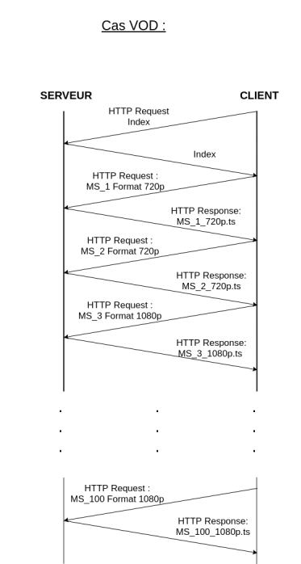

HLS signifie HTTP Live Streaming. HLS est un protocole de diffusion multimédia permettant de diffuser de la vidéo en direct ou à la demande. HLS fonctionne sur HTTP et utilise TCP comme protocole de transport. Avec HLS, le client est responsable de la demande de la liste de lecture appropriée en fonction des conditions actuelles du réseau et du matériel du client. Apple a lancé pour la première fois le protocole HTTP Live Streaming (HLS) en 2009. Avant la sortie de HLS, Apple utilisait le serveur de streaming Quicktime. Quicktime utilisait des ports non standard pour le transfert de données et les pare-feu bloquaient donc généralement les flux. HLS a été conçu pour corriger les erreurs de Quicktime et ainsi pouvoir être utilisable par tout type de matériel.
Le schéma ci-dessus décrit le fonctionnement de HLS. Y figurent 3 composantes: le serveur, le CDN et le client. Nous allons expliquer le fonctionnement de HLS dans un premier temps pour le cas de la vidéo à la demande (VOD), puis nous expliquerons ce qui est différent dans le cas du direct (Live).
Le fichier vidéo brut est envoyé au serveur. Celui-ci réalise alors un encodage du fichier brut : cela permet d’obtenir des petits fragments de la vidéo originelle appelés segments. Ces segments, une fois rassemblés, permettent de reconstituer la vidéo en entier, et ce dans différentes qualités : 360p, 720p, 1080p … Ainsi, pour chaque intervalle de temps donné dans la vidéo, il y a plusieurs segments, qui correspondent aux différentes qualités. C’est l’existence des segments de qualités différentes qui explique que l’utilisateur final peut passer d’une qualité à une autre alors qu’il est en train de lire une vidéo.
Une Playlist est un fichier texte d’extension .m3u8 dans lequel sont recensés les URL vers les tous segments d’une vidéo correspondant à une qualité donnée. Les URL sont recensées conformément à l’ordre chronologique de la vidéo. Une Playlist correspond donc à une vidéo et à une qualité donnée, c’est-à-dire que pour une vidéo traitée par le serveur, il y a autant de playlists créées que de qualités proposées. Une Master Playlist (ou Index) est également créée pour chaque vidéo : c’est une Playlist de Playlist, c’est-à-dire un fichier .m3u8 qui recense les URL vers chacune des Playlist correspondant à une qualité de la vidéo. C’est tout pour la partie serveur. Les segments et les Playlist que le serveur a créé sont conservés par celui-ci. Les fichiers demandés par le client lui seront alors envoyés par la suite.
Les fichiers demandés par le client lui sont transmis par le serveur. Ils transitent alors par un un réseau de serveurs dispersés géographiquement, puis arrivent à l’utilisateur final. Ce réseau de serveur est appelé Content Delivery Network (CDN)*. Si de nombreux utilisateurs provenant d’une même zone demandent les mêmes fichiers vidéo, le CDN va répliquer les fichiers du serveur HLS d’origine dans le serveur le plus proche possible de cette zone de sollicitation importante. Cela va permettre à l’information d’être disponible au plus proche de certains utilisateurs, de soulager la charge du serveur d’origine, et d’optimiser les temps de téléchargement.
*En fait, le CDN comprend,en plus des serveurs relais dispersés géographiquement, les serveurs d’où l’information provient, tels que le serveur HLS. Sur le schéma, le serveur HLS est séparé du CDN par souci de clarté, mais par définition du CDN, il en fait aussi partie.
Les requêtes du client vers le serveur, ainsi que les réponses du serveur, sont indiquées dans le schéma ci-dessous. Nous allons expliquer en détail ces échanges.
Le premier fichier que reçoit le client est la Master Playlist ou Index. Une fois ce fichier reçu, le client va évaluer son débit, puis il va faire une requête au serveur pour demander au serveur la Playlist qui correspond à la meilleure qualité de vidéo que sa bande passante peut accueillir. Une fois qu’il reçoit la Playlist de la qualité souhaitée, le client peut commencer à télécharger les segments un à un afin de pouvoir lire la vidéo. Lors de la lecture des segments déjà téléchargés, le client continue d’évaluer régulièrement sa bande passante. Au cas où une baisse de débit causerait une interruption de la vidéo, le client va demander au serveur, si elle existe, la Playlist correspondant à une qualité inférieure à celle qu’il possède déjà, mais qui reste optimale vis-à-vis de son nouveau débit. Une fois la nouvelle Playlist obtenue, le client pourra à nouveau télécharger les segments de la vidéo, en téléchargeant les segments qui succèdent chronologiquement à ceux déjà téléchargés. A contrario, si le débit du client s’améliore et que sa bande passante est adaptée à une qualité de vidéo supérieure, le client va demander auprès du serveur une meilleure qualité, pour pouvoir ensuite télécharger des segments qui correspondent à une meilleure qualité vidéo.
Le fonctionnement général de HLS est globalement le même dans le cas de la VOD et du Live. Le seul changement réside au niveau des segments et des Playlists correspondant à chaque qualité : en effet, les segments sont créés au fur et à mesure que la vidéo est enregistrée, et les Playlists correspondantes sont également mises à jour au fur et à mesure. Ainsi, comme c’est indiqué dans le diagramme d’échange ci-dessous, le client doit de son côté demander avant de télécharger chaque segment la Playlist mise à jour, afin de prendre connaissance des URLs des nouveaux segments créés.
La mise en place du protocole HLS a permis de corriger les erreurs de l’ancien serveur de streaming Quicktime concernant l’utilisation de ports statiques mais son fonctionnement provoque de la latence dû aux délais d’envoi de requêtes et réception des segments. Cet inconvénient est d’autant plus flagrant lors de la diffusion en direct ou les délais peuvent atteindre 30 secondes. De plus, les segments sont en général d’une longueur de 10 secondes ainsi en cas de problèmes réseau, le client HLS n’est pas capable de demander une qualité plus basse immédiatement. On peut citer le protocole MPEG-DASH qui propose des segments de taille variable entre 2 et 4 secondes et ainsi qui réagit plus rapidement au réseau du client. D’un point de vue avantages du protocole , les segments sont chiffrés à l’aide de l’algorithme AES. De plus, avec le protocole HLS, il est uniquement possible de demander de la vidéo au serveur. Le protocole HLS ne fonctionne que dans un sens unique, le client ne peut pas envoyer une vidéo vers le serveur. Ainsi la conférence est impossible à mettre en place avec HLS. La résolution de la vidéo dépend de la qualité de réseau du client, le client sélectionne la qualité la plus appropriée à son réseau afin d'éviter les coupures. Mais l’un des gros avantages réside dans le fait de pouvoir diffuser de la vidéo depuis tous types de serveurs (HTTP,Apache,nginx).